Instagram & Facebook
Plattformkompetenz für organischen Content und bezahlte Kampagnen.
Social Media Management für Unternehmen in Deutschland: Strategie, Content-Produktion und Kampagnen, die Vertrauen, Anfragen und Wachstum erzeugen. Persönlich betreut auf Deutsch.
Persönlich geführt, fundiert ausgebildet und mit echten Originalnachweisen statt austauschbarer Agenturversprechen.
Plattformkompetenz für organischen Content und bezahlte Kampagnen.
Ausbildung erfolgreich abgeschlossen – Strategie und Umsetzung aus einer Hand.
Bei mir sind Sie keine Nummer im System, sondern werden persönlich betreut. Kurze Abstimmungswege und eine feste Ansprechpartnerin – direkt mit mir, Jessica.
Originale Bewertung und Performance-Screenshots transparent auf der Website.
Von bekannten Marken bis zu ambitionierten Unternehmen: klare Strategie, hochwertige Inhalte und Zusammenarbeit auf Augenhöhe.
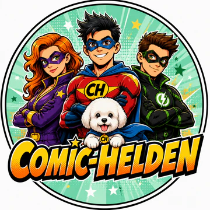
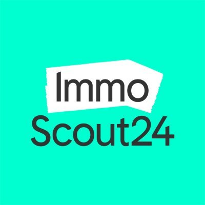
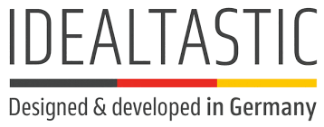
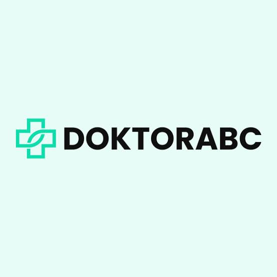
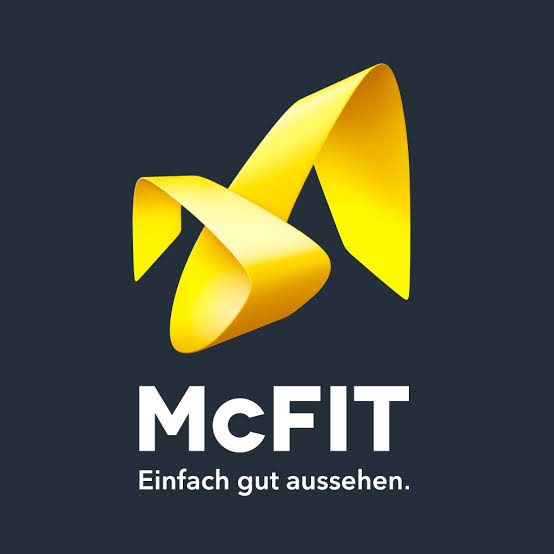
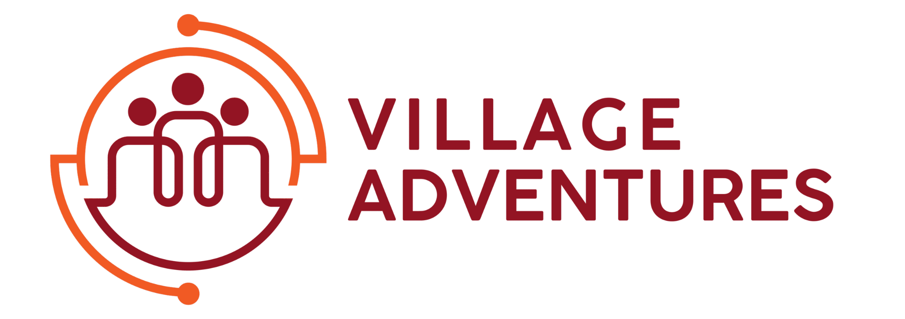
Keine erfundenen Awards, keine Vanity Metrics. Hier zeigen wir die gelieferten Originalnachweise und ordnen ein, was dahintersteckt.
Ein klarer Content-Mix aus Storytelling, Mehrwert und Emotion, regelmäßige Reels, Posts und Stories sowie tägliches Community-Engagement.
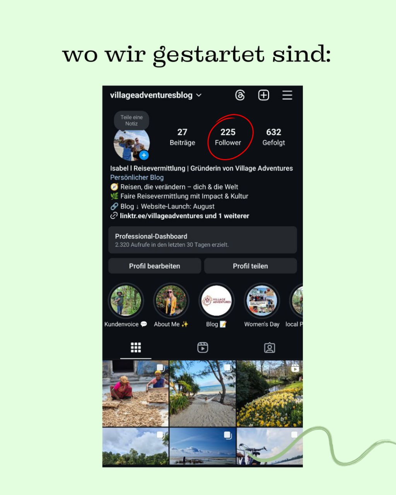
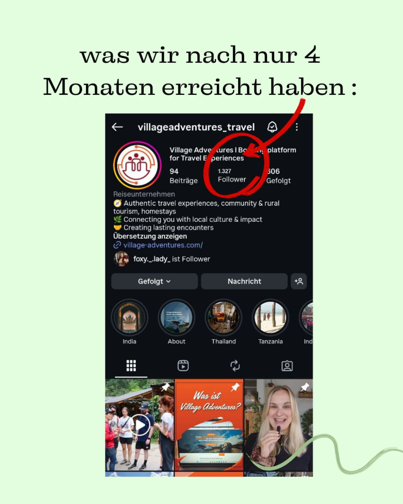
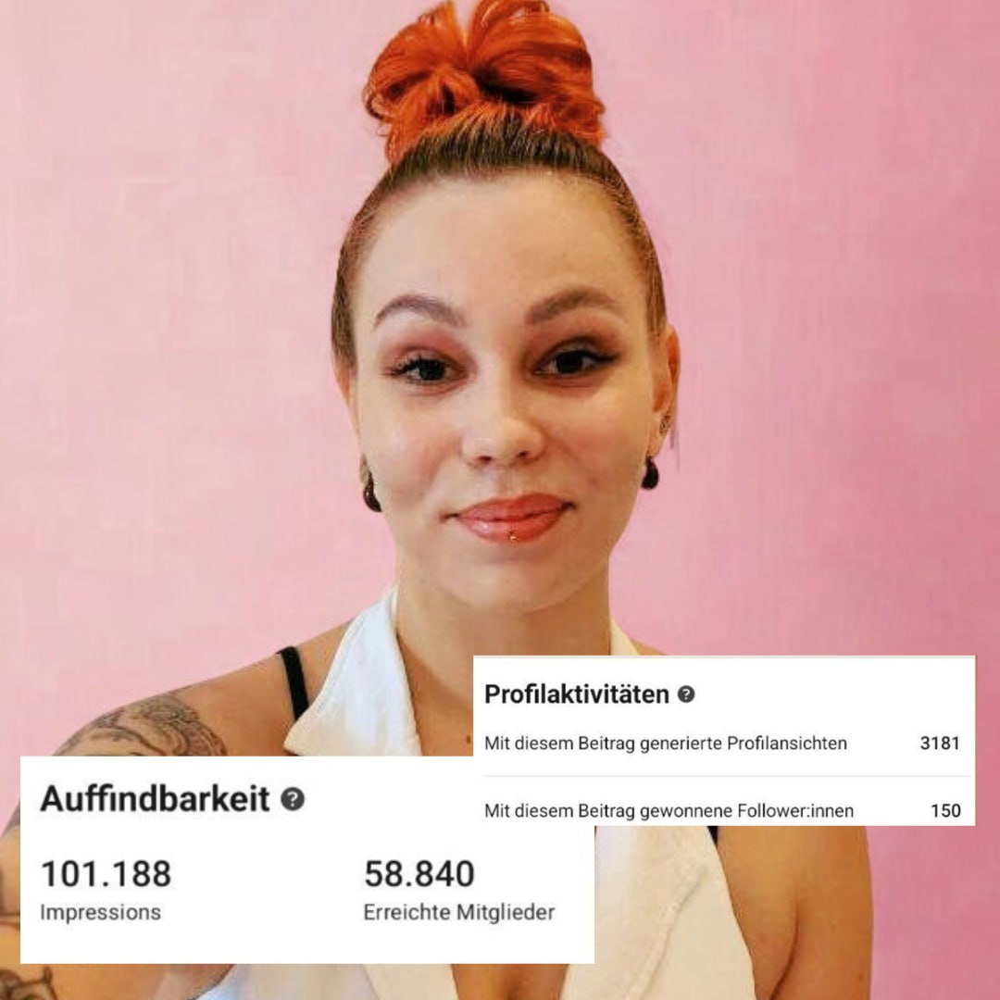
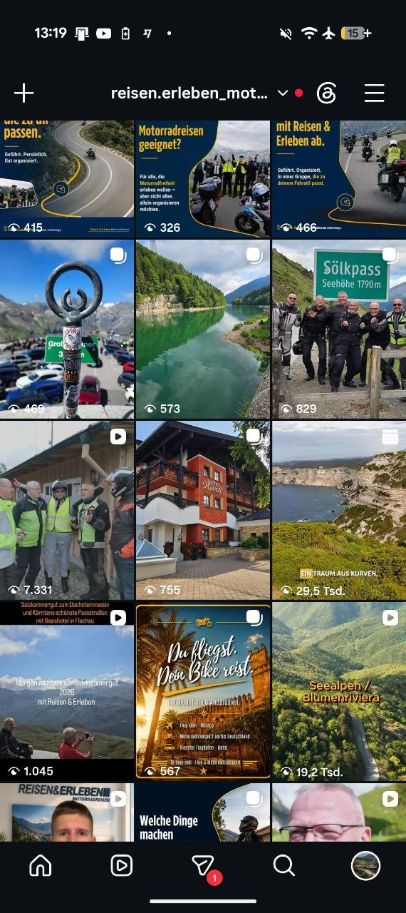
Kompletten Feed ansehen ↗Authentische Reisemomente und emotionale Reels, die Lust auf das nächste Motorradabenteuer machen.
„Jessica war immer erreichbar, professionell und trotzdem super herzlich. Sie hatte ein schnelles Auge für meine Zielgruppe.“
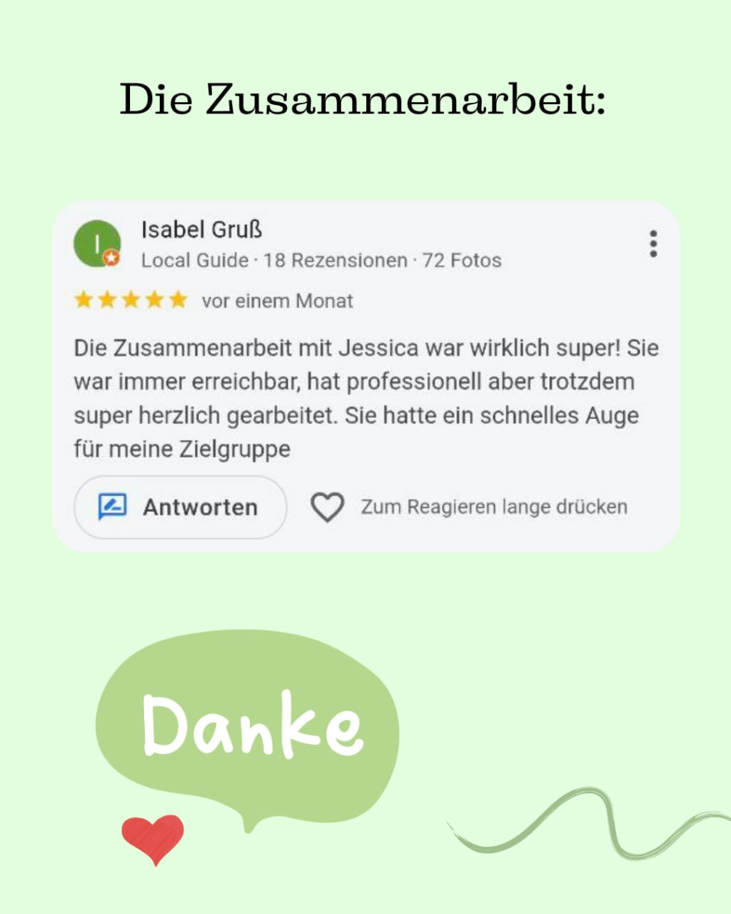
Ich bin Jessica und stehe für deine Marke selbst vor der Kamera: Produktvorstellungen, Testimonials, Lifestyle-Videos und kurze Video-Ads. Von der Idee über das Skript bis zum Schnitt bekommst du alles aus einer Hand. Auch als Einzelauftrag buchbar.
Ich arbeite am liebsten mit echten Menschen: deiner Persönlichkeit, deiner Stimme und Geschichten aus deinem Unternehmen. Authentischer Content schafft Nähe und Vertrauen – darauf setze ich in unserer Zusammenarbeit.
Du hast wenig Zeit oder möchtest selbst nicht vor der Kamera stehen? Auf deinen ausdrücklichen Wunsch können wir KI-Stimmen oder einen KI-Avatar entwickeln, der dir ähnlich sieht. Du entscheidest, ob und wo wir diese Möglichkeiten einsetzen. Stimme und Aussehen verwenden wir nur mit deiner Zustimmung; Inhalte stimmen wir vor der Veröffentlichung mit dir ab.
„Dein nächstes Abenteuer beginnt hier.“Beispieltext für ein Reise-Reel
Ein gesprochenes Voiceover für Produktvideos, Reels oder Erklärvideos – auf Wunsch mit deiner freigegebenen Stimme.
Ein KI-Avatar kann vorbereitete Texte präsentieren, etwa kurze Tipps oder eine Vorstellung deines Angebots.
Aus deinen Themen entwickeln wir mit KI Skriptentwürfe, Hooks und Varianten für Posts – persönlich ausgewählt und überarbeitet.
Ein visuelles Motiv rund um Videoproduktion und Vertrauen. Beispiel aus meinem KI-Design-Portfolio.
Design in voller Größe ansehen ↗Illustrative Beispielkonzepte. Deinen konkreten Einsatz entwickeln wir gemeinsam.
Möglichkeiten besprechen ↗Wir entwickeln eine klare Social-Media-Strategie, analysieren Zielgruppen und Wettbewerber und optimieren laufend anhand echter Performance-Daten.
Unverbindliches Rechenbeispiel – keine Ergebnisgarantie. Echte Resultate hängen von Angebot, Markt, Budget und Umsetzung ab.
Marke, Zielgruppe, Angebot und Ziele werden glasklar.
Strategie, Storytelling und Produktion greifen als System ineinander.
Wir testen, messen und schärfen, was nachweislich Wirkung erzeugt.